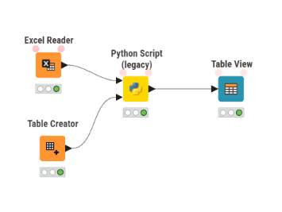
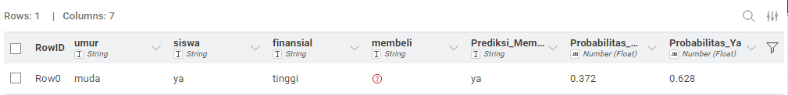

Klasifikasi Menggunakan Naive Bayes Predictor#
Naive Bayes adalah kelompok algoritma klasifikasi yang didasarkan pada Teorema Bayes. Kata “Naive” (Naif) digunakan karena algoritma ini memiliki asumsi independensi bersyarat (conditional independence): ia menganggap bahwa setiap fitur dalam data tidak saling memengaruhi satu sama lain jika kelas targetnya diketahui.
Kerangka utama Teorema Bayes direpresentasikan dengan rumus:
Karena asumsi naif tersebut, probabilitas fitur gabungan \(P(X|Y)\) dipecah menjadi perkalian dari probabilitas masing-masing fitur independen \(P(x_i|Y)\). Sehingga persamaan klasifikasinya menjadi:
1. Jenis-jenis Naive Bayes dan Perbedaan Rumusnya#
Walaupun kerangka utamanya sama, cara algoritma menghitung Probabilitas Kondisional \(P(x_i|Y)\) berbeda-beda tergantung pada jenis distribusi data fitur yang dianalisis:
1.1 Gaussian Naive Bayes#
Penggunaan: Digunakan saat fitur berupa data numerik kontinu (bilangan real/desimal) yang diasumsikan berdistribusi normal (membentuk kurva lonceng).
Rumus: Probabilitas dihitung menggunakan fungsi kepekatan probabilitas (Probability Density Function / PDF) dari distribusi normal:
\[P(x_i|y) = \frac{1}{\sqrt{2\pi\sigma^2_y}} \exp\left(-\frac{(x_i - \mu_y)^2}{2\sigma^2_y}\right)\](Di mana \(\mu_y\) adalah rata-rata fitur \(x_i\) pada kelas \(y\), dan \(\sigma^2_y\) adalah variansnya).
1.2 Categorical Naive Bayes#
Penggunaan: Digunakan saat fitur bersifat kategorikal diskrit (label huruf/kata tanpa tingkatan).
Rumus: Probabilitas dihitung murni dari rasio frekuensi kemunculan kategori tersebut di dalam suatu kelas. Umumnya ditambahkan Laplace Smoothing (\(\alpha\)) untuk mencegah nilai peluang nol (Zero Probability Problem):
\[P(x_i|y) = \frac{N_{x_i, y} + \alpha}{N_y + \alpha c}\](Di mana \(N_{x_i, y}\) adalah jumlah fitur \(x_i\) yang muncul di kelas \(y\), \(N_y\) adalah total sampel kelas \(y\), dan \(c\) adalah jumlah kategori unik).
1.3 Multinomial Naive Bayes#
Penggunaan: Digunakan untuk vektor data yang merepresentasikan frekuensi kemunculan peristiwa (counts). Sangat populer untuk klasifikasi teks (Natural Language Processing), seperti menghitung berapa kali sebuah kata muncul dalam satu dokumen (TF-IDF atau Bag of Words).
Rumus: Mirip dengan kategorikal, namun memperhitungkan total frekuensi kumulatif seluruh istilah:
\[P(x_i|y) = \frac{N_{yi} + \alpha}{N_y + \alpha n}\]
1.4 Bernoulli Naive Bayes#
Penggunaan: Digunakan untuk fitur logik biner/boolean (1 atau 0, Ya atau Tidak). Tidak peduli seberapa sering sebuah kata muncul, algoritma ini hanya melihat apakah kata tersebut ada (1) atau tidak ada (0).
Rumus: Menghukum dokumen yang tidak memiliki fitur tertentu:
\[P(x_i|y) = P(i|y) x_i + (1 - P(i|y)) (1 - x_i)\]
2. Langkah-langkah Algoritma Naive Bayes#
Secara garis besar, fase training dan klasifikasi algoritma ini melalui tahapan berikut:
Menghitung Probabilitas Prior \(P(Y)\): Menghitung peluang dasar masing-masing kelas target dari total data populasi.
Menghitung Probabilitas Kondisional \(P(x_i|Y)\): Menghitung peluang setiap nilai fitur spesifik terhadap kelas target menggunakan salah satu rumus fungsi distribusi di atas (Categorical, Gaussian, dsb.).
Mengalikan Peluang (Fase Prediksi): Saat mengevaluasi observasi data baru, probabilitas prior dikalikan dengan seluruh probabilitas kondisional dari fitur data baru tersebut.
Menentukan Kelas (Maximum A Posteriori): Kelas yang menghasilkan nilai probabilitas akhir paling tinggi dipilih sebagai label prediksi final.
3. Praktik KNIME: Prediksi Pembelian Laptop#
Untuk simulasi implementasi Categorical Naive Bayes, kita menggunakan dataset historis pengunjung sebuah toko laptop guna memprediksi keputusan pembelian berdasarkan kriteria: Umur, Status Siswa, dan Finansial.
3.1 Dataset Historis (Data Latih)#
Umur |
Status Siswa |
Finansial |
Membeli Laptop |
|---|---|---|---|
Muda |
Tidak |
Tinggi |
Tidak |
Muda |
Tidak |
Tinggi |
Tidak |
Menengah |
Tidak |
Tinggi |
Ya |
Tua |
Tidak |
Sedang |
Ya |
Tua |
Ya |
Rendah |
Ya |
Tua |
Ya |
Rendah |
Tidak |
Menengah |
Ya |
Rendah |
Ya |
Muda |
Tidak |
Sedang |
Tidak |
Muda |
Ya |
Rendah |
Ya |
Tua |
Ya |
Sedang |
Ya |
Muda |
Ya |
Sedang |
Ya |
Menengah |
Tidak |
Sedang |
Ya |
Menengah |
Ya |
Tinggi |
Ya |
Tua |
Tidak |
Sedang |
Tidak |
3.2 Target Prediksi (Data Uji)#
Kita akan memprediksi keputusan dari pelanggan baru dengan kriteria:
Umur: Muda
Status Siswa: Ya
Finansial: Tinggi
Membeli Laptop: ?
3.3 Alur Kerja Pemodelan di KNIME (Ekstensi Python Script Legacy)#
Implementasi workflow ini memanfaatkan integrasi bahasa pemrograman Python di dalam KNIME menggunakan library scikit-learn. Pastikan ekstensi KNIME Python Integration (Legacy) sudah terpasang di sistem Anda.
Excel Reader (Data Latih): Tambahkan node
Excel Readerke workspace. Klik ganda, pilih Browse, dan masukkan fileDataset_Laptop.xlsx. Pastikan tab sheetData_Latihterpilih dan opsi Table contains column names in row (biasanya baris ke-1) sudah tercentang agar judul kolom terbaca dengan benar.Table Creator (Data Uji): Tambahkan node
Table Creatorkhusus untuk data pelanggan baru. Buat 4 kolom yang sama persis, lalu masukkan satu baris kriteria (Muda, Ya, Tinggi). Untuk kolomMembeli Laptop, biarkan kosong atau isi dengan tanda?.Python Script (2⇒1) (Legacy): Tambahkan node ini ke workspace. Node ini berfungsi untuk menjalankan skrip Python yang menerima dua input tabel secara bersamaan.
Menyambungkan Port: Hubungkan output dari
Excel Readerke port input atas (port 1) pada node Python. Kemudian, hubungkan output dariTable Creatorke port input bawah (port 2).
Konfigurasi Skrip Python: Klik ganda pada node
Python Script (2⇒1)dan hapus semua kode bawaan. Masukkan skrip scikit-learn berikut ke dalam editor:
import pandas as pd
from sklearn.naive_bayes import CategoricalNB
from sklearn.preprocessing import OrdinalEncoder
# 1. Mengambil data dari port input KNIME
df_train = input_table_1.copy()
df_test = input_table_2.copy()
# 2. Memisahkan Fitur (X) dan Target (y) pada Data Latih
X_train = df_train.drop(columns=['Membeli Laptop'])
y_train = df_train['Membeli Laptop']
# 3. Menyiapkan Fitur (X) pada Data Uji
X_test = df_test.drop(columns=['Membeli Laptop'])
# 4. Encoding: Mengubah nilai teks kategori menjadi angka untuk Scikit-learn
encoder = OrdinalEncoder()
X_train_encoded = encoder.fit_transform(X_train)
X_test_encoded = encoder.transform(X_test)
# 5. Membangun dan Melatih Model Naive Bayes Kategorikal
model = CategoricalNB()
model.fit(X_train_encoded, y_train)
# 6. Melakukan Prediksi untuk Data Uji
predictions = model.predict(X_test_encoded)
probabilities = model.predict_proba(X_test_encoded)
# 7. Menyimpan Hasil Prediksi ke dalam tabel output
df_test['Prediksi_Membeli'] = predictions
df_test['Probabilitas_Tidak'] = probabilities[:, 0]
df_test['Probabilitas_Ya'] = probabilities[:, 1]
# 8. Mengirim tabel hasil kembali ke KNIME
output_table = df_test
4. Kesimpulan Hasil Prediksi#
Berdasarkan eksekusi model Categorical Naive Bayes menggunakan Python Script di KNIME, kita telah berhasil memprediksi keputusan dari pelanggan baru dengan kriteria Umur: Muda, Status Siswa: Ya, dan Finansial: Tinggi.

Dari tabel output yang dihasilkan, algoritma menghitung nilai probabilitas kondisional sebagai berikut:
Probabilitas Tidak (Tidak Membeli): 0.372 (37.2%)
Probabilitas Ya (Membeli): 0.628 (62.8%)
Sesuai dengan prinsip Maximum A Posteriori pada Teorema Bayes, algoritma akan memilih kelas dengan nilai probabilitas yang paling tinggi. Karena probabilitas “Ya” (0.628) jauh lebih besar daripada probabilitas “Tidak” (0.372), maka model menetapkan klasifikasi akhir menjadi Ya.
Kesimpulan Akhir: Sistem memprediksi bahwa pelanggan baru dengan karakteristik tersebut AKAN MEMBELI LAPTOP. Hasil ini menunjukkan secara logis bahwa meskipun pelanggan tersebut masih berusia muda, kombinasi antara statusnya yang merupakan seorang siswa dan memiliki kondisi finansial yang tinggi memberikan dorongan peluang yang dominan terhadap keputusan pembelian.